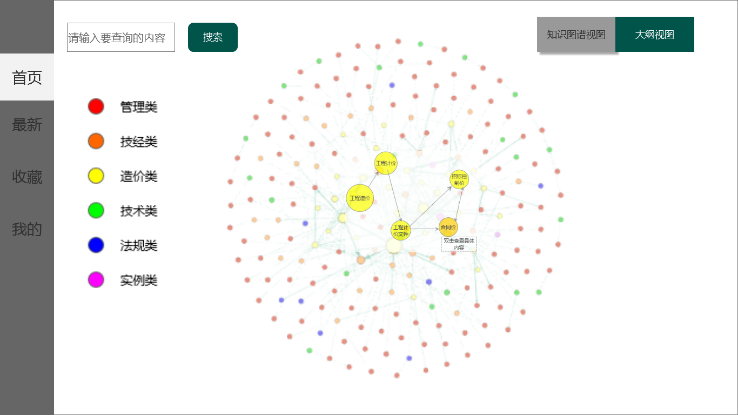
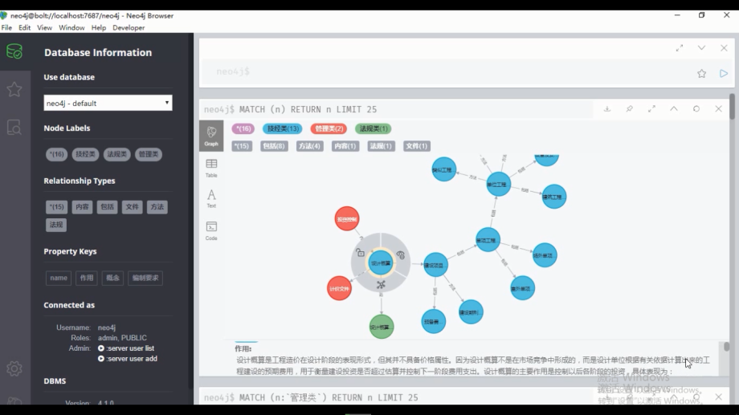
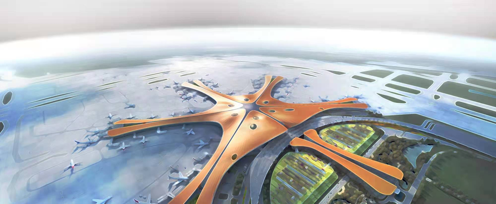
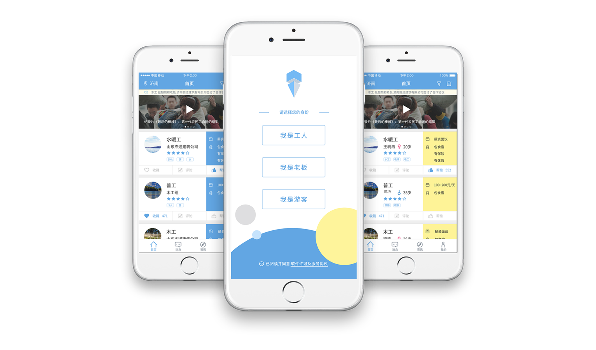
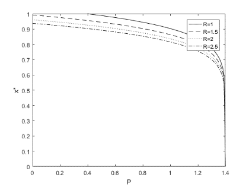
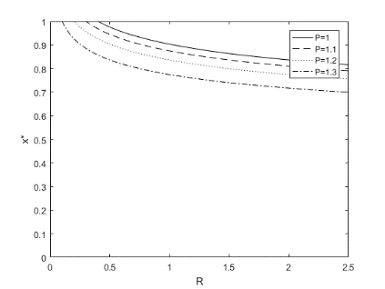
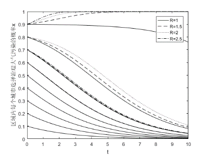
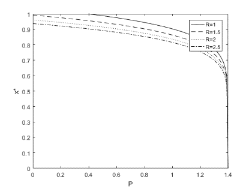
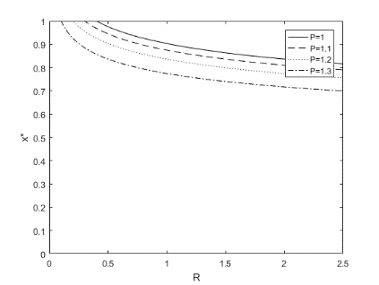
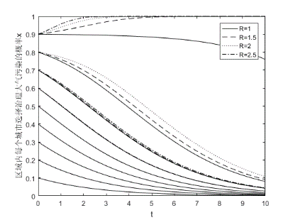

Biography
Currently, Yueran Wang is a postgraduate student at Tongji University majoring in Construction Project Management, and she will graduate in March 2022. Her research is focused on improving the qualities of the products, effectiveness of management and the automation of the process in the AEC industry by integrating governance modes, management methods and new technologies throughout the complex project system considering the life cycle, key stakeholders and interconnected information. Her current research interests include: Project Governance , BIM , Blockchain in Construction , Ontology and Knowledge Graph in construction , and the integration of them. She will get her Master of Science in Construction Project Management in March 2022 from Tongji University . She holds a Bachelor of Engineering in Construction Project Management and a Bachelor of Law from Shandong University .
Curriculum Vitae
Please click here to see my CV!Research Projects
Research on the knowledge system of construction cost based on knowledge graph
We are working with the Shanghai Municipal Electricity Power Company of State Grid Corporation of China to construct an e-learning platform for construction cost and other knowledge in the construction industry.
Power transmission and transformation project requires cross-disciplinary cooperation among project participants who should learn about knowledge of other disciplinaries to improve the effectiveness of collaboration. However, the extensive theoretical literature, books, contract texts, and cases in the database are fragmented and difficult to search and learn.
We designed a prototype of the e-learning platform based on the knowledge graph in the form of a search engine with a case library and a graphical knowledge network. To achieve this, we designed a process to build a knowledge graph in the construction industry, including entity extraction, ontology construction, relationship extraction, attribute extraction. Working with experts in different disciplines, we constructed over 300 OWL ontologies on protégé.
Now we are working on the NLP-based knowledge retrieval engine.
Research on the philosophy, method and practice of project governance and management in Beijing Daxing International Airport(BDIA) project
Beijing Daxing International Airport is an integrated air-ground transportation hub. This project is the largest airport project in the world. It is a complex system with a large volume, numerous interfaces and a large number of stakeholders, but it only took four years and seven months from the start of construction and the start of operation. Therefore, it is necessary to study the governance mode, management methods, and new technologies.
We interview 28 managers of BDIA project to study the philosophy and methods to manage such a megaproject.
We try to figure out the key stakeholders and summarize the governance mode of BDIA project by building an affiliation network of stakeholders based on the meeting munites.
Policies of carbon emission control in AEC industry in China
Congsidering air resource is a kind of public good, we compared different policies using evolutionary game theory to find out an ideal policy to control carbon emission in AEC industry and reduce air pollution.
Innovation Projects
i Worker
We created this project with the help of Enactus China. It is a project to help migrant workers in the AEC industry on Internet platforms to weaken the information asymmetry of the employment market. We created and managed an official account on WeChat and QQ chat groups to provide information about job opportunities and rights protection, and designed an APP prototype. To provide more useful information, we collaborated with Ruiwen law firm to provide legal advice.
Dissertations
Bachelor Dissertation, Bachelor of Engineering
Enablers of project environmental practices in the Chinese construction industry: a structural equation modelling analysis, Prof.Ying Li, Shandong University
Appropriate enablers are essential for the promotion of environmental practices in the project context. The purpose of this dissertation is to investigate whether team knowledge, government policies and corporate strategies are conducive to project environmental practices. A theoretical model was established and several hypotheses were developed. Based on a sample of 131 questionnaires, structural equation modelling analysis was conducted. The results show that corporate strategies and team knowledge are confirmed to influence project environmental practices positively. Government policies positively impact corporate strategies, and corporate strategies have a positive impact on team knowledge.
Master Dissertation(working), Master of Science
Dynamic governance of complex megaprojects: case study of BDIA project, Prof.Xianyi Gao, Tongji University
The dissertation focuses on the dynamic governance of megaprojects as complex systems. I will :
1) systematically summarize the research about project governance, megaprojects and complex systems
2) build an affiliation network of stakeholders based on the participants of official meeting minutes from the dynamic perspective and transform the affiliation network to social network
3) analyze the structure of the social network based on the types of stakeholders
4) analyze the subject of the critical groups of stakeholders5) create a governance model from the perspective of stakeholders and life cycle for megaprojects as complex systems
Publications
Accepted
Yueran, W., & Xianyi, G. (2021). Formation of cooperative air pollution control alliance in inter-provincial and multi-city regions: Based on evolutionary game analysis. Operations Research and Management Science
 

The non-territorial nature of air pollution determines that the governance of air pollution needs to break the inter-provincial barriers of territorial governance, and form an inter-provincial multi-city air pollution cooperative governance alliance. This article will use the evolutionary game method to analyze the stable strategies of air pollution control under the four scenarios of multiple urban entities in a trans-provincial area, which are unconstrained territorial governance, constrained territorial governance, spontaneous formation of cooperative governance alliance under constrained territorial governance, and cooperative governance alliance that breaks territorial governance. The results show that unconstrained territorial governance will lead to continuous deterioration of the environment, the governance efficiency of constrained territorial governance is low, the spontaneously formed cooperative governance alliance cannot solve the fundamental problems brought by territorial governance, and the cooperative governance alliance is a relatively optimal air pollution control plan. This article provides a certain reference for the design of air pollution control mechanism.
Submitted
Yueran, W., & Xianyi, G. (2021). Policies for promoting star-rated green housing – static subsidy vs. dynamic subsidy. Computers & Industrial Engineering

To explore how to improve the effectiveness and efficiency of government subsidy to promote the star-rated green housing, we analyzed the strategies of developers and consumers under three policies based on evolutionary game theory: static subsidy to developers, static subsidy to developers and consumers, and dynamic subsidy to developers and consumers. We discussed the influence of the amount and the distribution proportion of subsidy on the stable strategy. Then, we did the numerical simulation. The results show that: 1) under the static subsidy policy, the system is oscillating, and the subsidy cannot promote star-rated green housing; 2) dynamic subsidy to developers and consumers can make the system stable and promote star-rated green housing; 3) the amount and the distribution proportion of subsidy need to be determined by the government through numerical simulation. This study provides a reference for designing the promotion mechanism of star-rated green housing.
Working
Rule-based automated ontology extraction in AEC industry
Ontology-based e-learning platform of construction cost
Last update: 09/2021